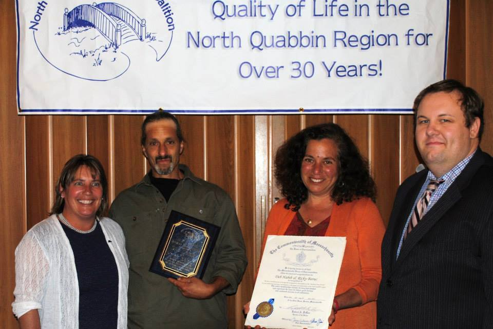

Staff, Board, Supporters

Wonderful and Sage Board of Directors
At the same time, we are honored to live and work in a region
with wonderful partners doing amazing work and supporting each other to build healthy, strong, resilient
communities!
Seeds of Solidarity


165 Chestnut Hill Rd
Orange, Massachusetts
01364-1078
Phone: (978) 544-9023